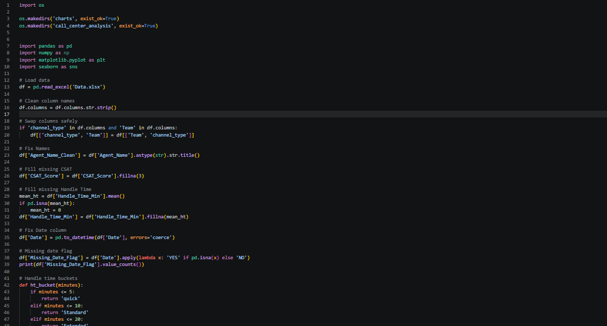
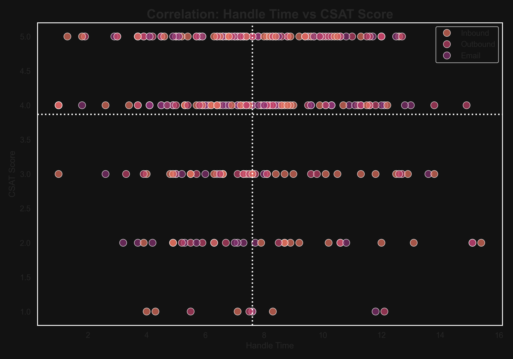
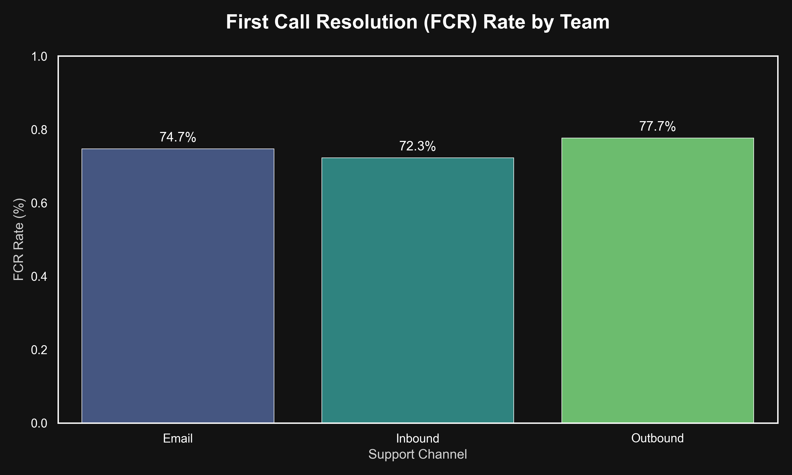
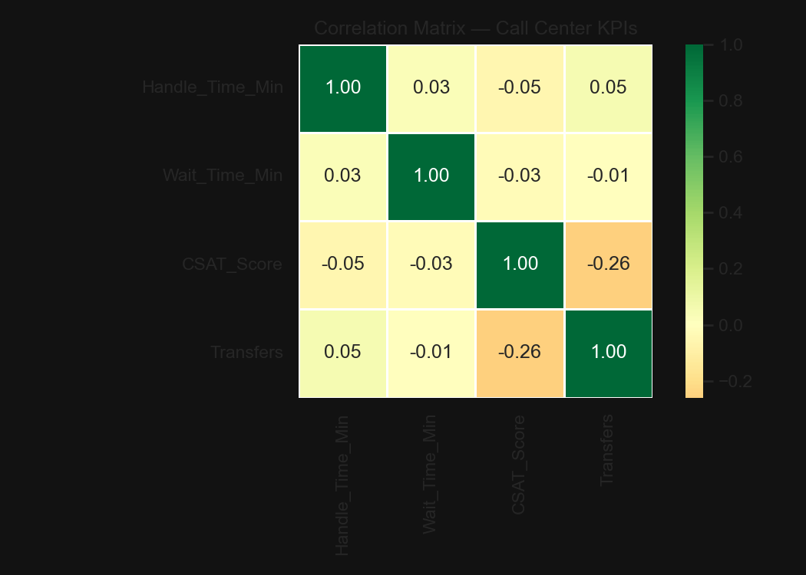

Featured Project — 01
Call Center KPI Analysis
Dashboard previews

Operational Overview

Agent Deep Dive
Operational Overview
Agent Deep Dive
SQL in action

QUERY 6 — CTE
Monthly trend — cases, FCR and CSAT over 12 months

QUERY 7 — CASE WHEN
Handle time bucketing — 300 rows categorised by call duration
Python code

DATA CLEANING
Imports, standardisation, missing value imputation

AGGREGATIONS & VISUALS
groupby, FCR rate calc, seaborn barplot
Python visualisations

Handle Time vs CSAT

FCR Rate by Team

Correlation Matrix
Project files
Call center data analysis.xlsx
Cleaned dataset with KPI formulas
Call center.db
SQLite database — 12 analytical queries
queries.txt
52 SQLite queries — CTEs, CASE WHEN, HAVING, window functions
analysis.py
pandas groupby, seaborn visuals, correlation matrix, openpyxl export
CCI_Python_Analysis.xlsx
Multi-sheet Python export via openpyxl
Metric Dashboard.pbix
Requires Power BI Desktop to open